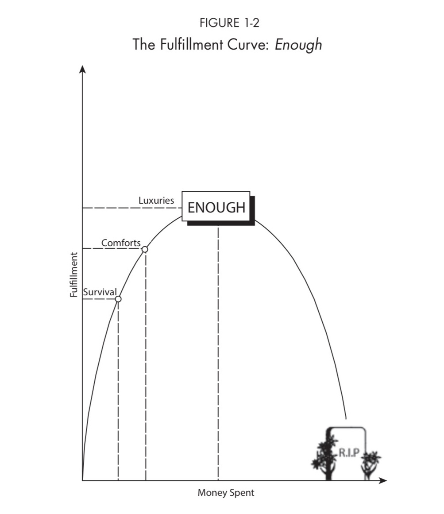
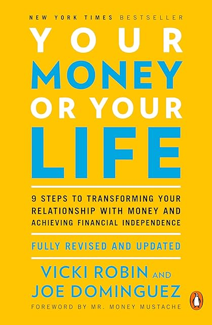

(Audio) Your money or your life, by Robin and Dominguez
Sunday November 23, 2025
This is the 2018 revised edition, not the 1992 original, but it's still arguably the antecedent to the FIRE (Financial Independence, Retire Early) movement and now even features a foreword from Mr. Money Mustache. It's a nine-step program.
- Figure out how much money you've earned in your whole life, and your current net worth.
- Figure out your "real hourly wage," and track all your income and spending.
- Catalog monthly spending into custom categories for you.
- Evaluate how you feel about your spending, by category.
- Make a monthly chart tracking your income and spending.
- Minimize spending.
- Maximize income.
- Accumulate money toward a crossover point where you can live on investment income.
- Invest in fairly boring ways to generate income you can live on.
It's reasonable advice and I generally agree. I was a little surprised by the extent to which the book is really "degrowth," in the sense of Rushkoff. It's really not about "fat FIRE," but about simple living, or voluntary simplicity, not just as an expedient for retirement, but as a moral-environmental imperative.
I liked how We've got you covered was very clear about the decision inherent in health insurance about what to cover versus not cover. This book is clear about the decision regarding how much is "enough" spending for life in general.
I think the choice about how much is "enough" is interesting as a personal choice, and also an interesting topic in connection with Fully Automated Luxury Communism. (What level of luxury?) I don't think this figure ("The Fulfillment Curve") is super great though:

The justification in the text is that people report similar "fulfillment" across a wide range of incomes, and that at some point you get more "clutter" than real fulfillment. I don't think it's completely wrong, but it's close. I feel like there could be something here about finding fulfillment in better ways, living in community and participating in the work that supports that community, equality being healthier than subjugation of the poor by the rich, that kind of thing. But at the very least this kind of claim needs more evidence and fewer headstones tossed on the graph.
It's a fine book with a distinct voice. It talks about "consciousness" and "life energy" constantly. It says that since you spend time earning money, money is equivalent with "life energy," which kind of works in the framework of the book but doesn't raise to the next natural level, as a critique of the conditions of capitalism.
The author is also into "conversation cafés," which seem like they could be neat.
